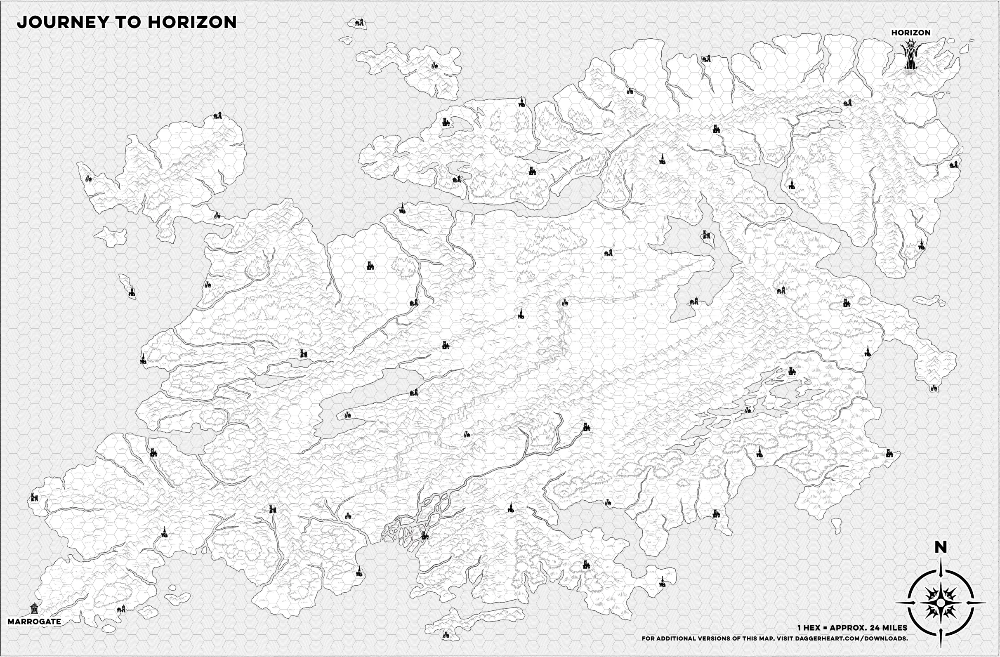

GPU bench — control
all pages
Test
nothing moves (page only)
one 60 px dot pulsing, no map
same dot, with the 4848x3185 map image behind it
same dot + map, stepped ~8 fps
a 100x100 canvas redrawn every frame, no map
…
Leave ~20 s per option and read GPU 3D. If the single dot alone already takes tens of %, the GPU is simply waking up for any animation and no layering will help — only fewer / shorter animations.
